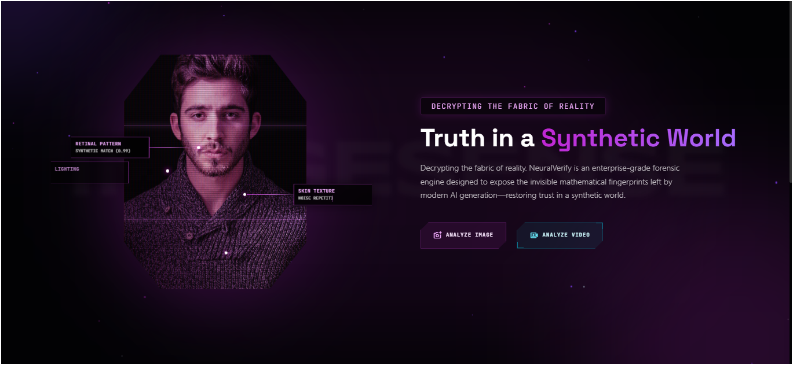

Featured Projects
Selected work — problem, approach, and outcome
Crisis OS
Cities face a constant stream of conflicting crisis signals from social media, weather, traffic, and field reports, making it hard to verify incidents and respond quickly. Crisis OS brings nine specialized AI agents together to detect and verify events, predict what could happen next, coordinate resources, and keep key stakeholders informed through a live, mobile-first tactical interface.
Resume Screening AI
Resume Screening AI is an intelligent recruitment system that leverages advanced Natural Language Processing (NLP) and Machine Learning to automatically match resumes with job descriptions. It replaces manual screening with AI-powered precision, helping recruiters identify the strongest candidates in seconds.
Causal Impact Analyzer
Causal Impact Analyzer is an interactive tool for estimating and visualizing the causal effect of interventions on time series data using Bayesian Structural Time Series (BSTS) models. It helps data scientists, analysts, and researchers measure the true impact of product launches, marketing campaigns, policy changes, and other events on key performance indicators through a professional, intuitive interface.

ImageSense
ImageSense is an AI platform engineered to detect synthetic media and deepfakes using the reasoning power of custom-built models. Instead of passively classifying pixels, its agent actively examines media for spatial noise, anatomical anomalies, and lighting inconsistencies, generating an Explainable AI (XAI) forensic report alongside its confidence score.
RetinaLens AI: Clinical Decision Support System for Diabetic Retinopathy
RetinaLens AI is an artificial intelligence system designed to assist ophthalmologists in diagnosing Diabetic Retinopathy (DR) from fundus photography. By bridging advanced computer vision techniques with modern web deployment, this project demonstrates how deep learning can be packaged into a secure, low-latency, and highly accurate clinical tool.